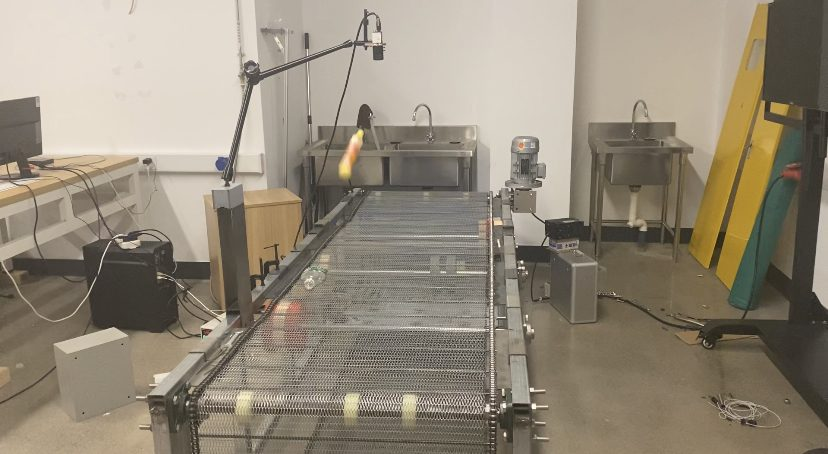
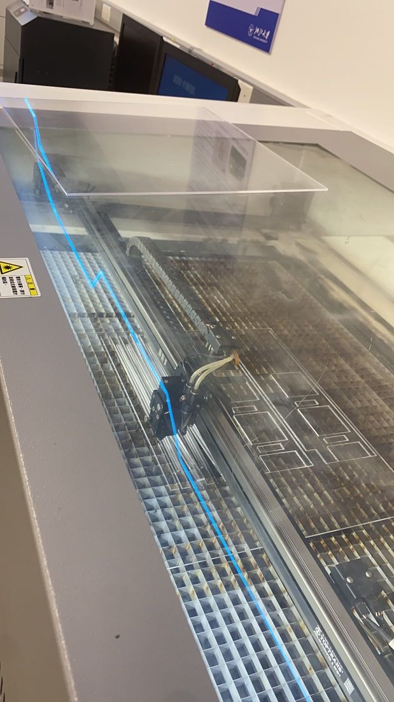
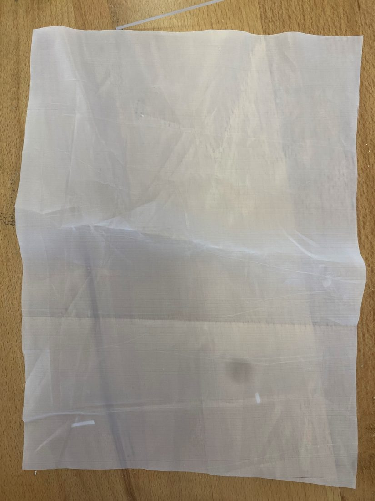
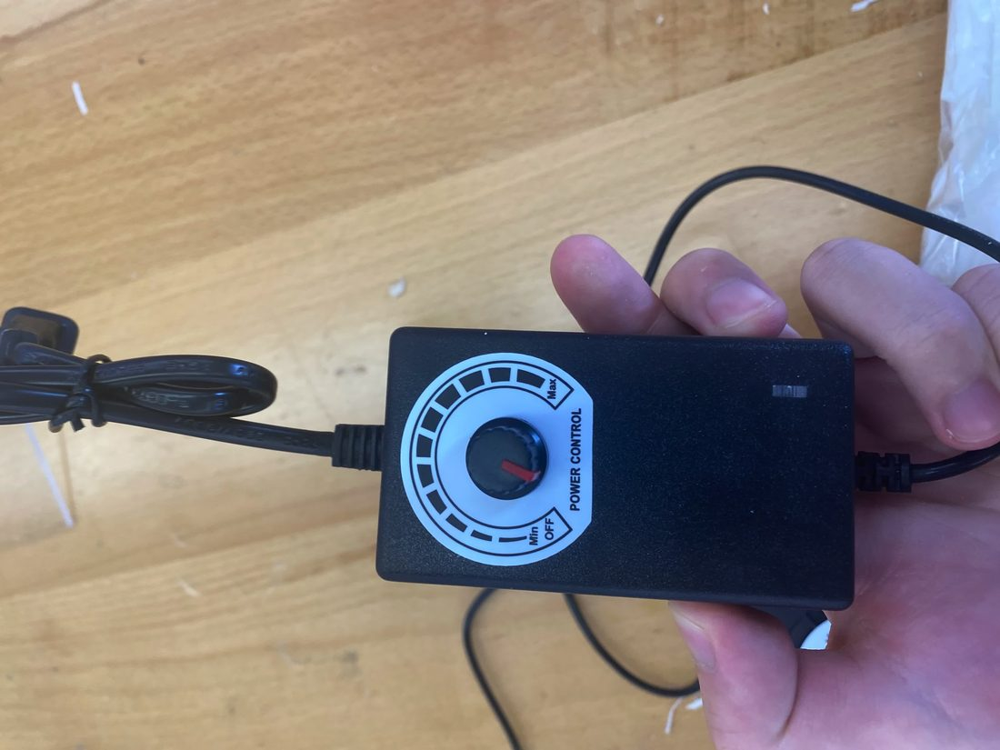
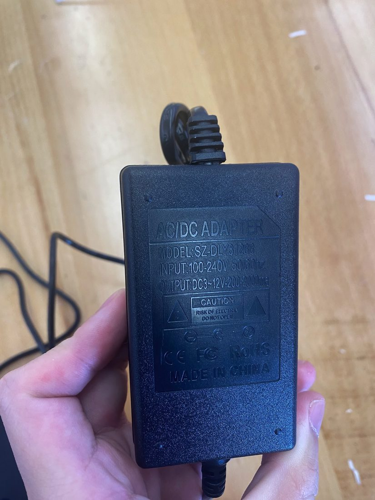

低成本便携式 PIV 粒子图像测速演示装置
设计并制作一台低成本、便携、可交互的 PIV 演示装置：用激光片光照亮流道中的示踪粒子、CMOS 相机采集、软件计算并实时可视化速度场，把原本昂贵复杂的 PIV 原理做成低年级学生也能上手的教学设备。我负责整机机械系统。
项目背景
PIV（粒子图像测速）是实验流体力学测速的主流方法，但专业设备复杂、昂贵、对环境要求高，低年级学生难以理解其原理。团队目标是做一台低成本、易维护、便携且带交互功能的装置，直观演示 PIV 工作原理。
系统组成（多子系统集成）
- 流道子系统：鼓风机驱动空气循环并携带示踪粒子，含调速装置与尼龙滤网。
- 照明子系统：激光经柱面镜整形成二维片光，照亮流场使粒子散射成像。
- 图像采集：CMOS 相机在两个时刻多重曝光采集粒子位置。
- 交互 GUI：树莓派 + 7 吋触摸屏，实时显示粒子图像、速度矢量与流量，支持师生交互控制。
我的具体工作（负责机械系统）
- 整机结构设计：设计铝型材支架作为装置主体框架，承载激光、相机、流道、屏幕等子系统并保证相对位置精度与可调性。
- 外壳与布局：设计木箱外壳集成走线与防护；协调各子系统在有限空间内的安装与光机对位（相机视场对准激光片光照亮的流道截面）。
- 测试：采集沙、水、泡沫球等不同介质中的粒子运动序列并生成轨迹 / 速度成图。
指标与成果
- 高层指标：速度幅值误差 < 20%、方向偏差 < 20°（对比专业 PIV 结果）。
- 完成从需求 → 多子系统设计 → 物理搭建 → 测试验证 → 设计文档 / 答辩的完整 Senior Design 闭环。
- 集成机械、光学、成像、嵌入式四类子系统于一台便携低成本装置，实现实时速度场可视化。
装置与测试照片







测速结果成图（多介质）


点击图片可查看大图。
姚涵非 · 返回主页